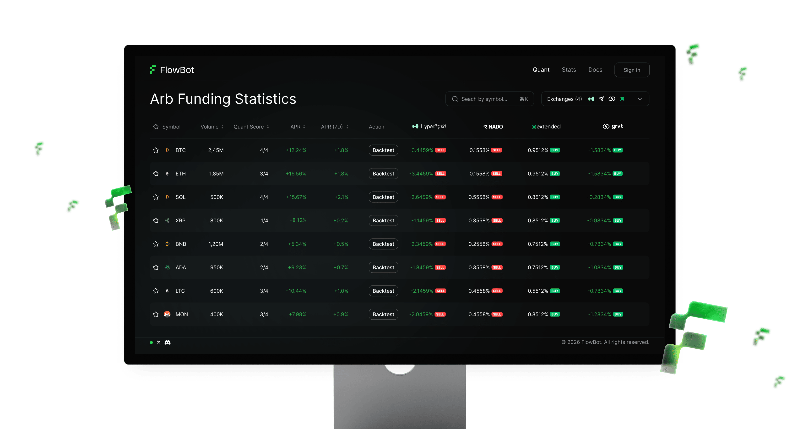
Торговля без эмоций и круглосуточно
Пользователи
Крипто-трейдеры, от новичков до профи, которые хотят торговать без эмоций и круглосуточно.
Что даёт продукт
Автоматические стратегии, аналитика в реальном времени и подключение через 3 шага — без сложных настроек.
Ценность для бизнеса
Рост объёма торгов → увеличение комиссионного дохода → масштабирование DEX.
Результат редизайна
Принятие решений
Быстрее — за счёт нового решения с табличным видом и сравнением данных на разных биржах.
Время поиска
Добавил поле поиска и мультиселект с выбором бирж в разделе арбитража фандинга.
Биржи в одном окне
Сравнение цены одного инструмента на нескольких биржах одновременно.
Было → стало
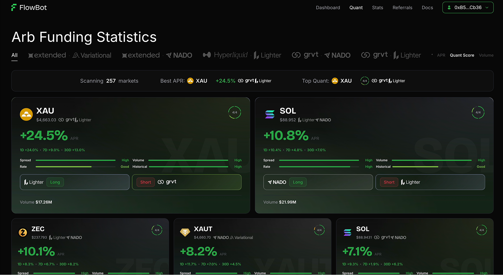
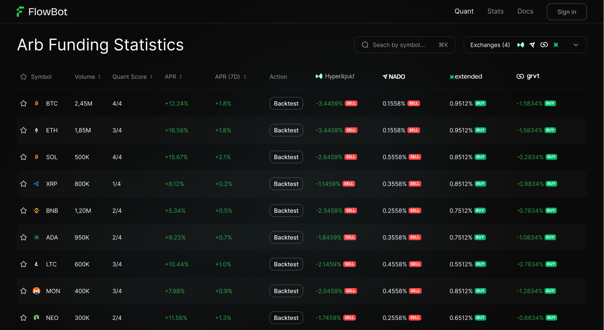
Потяните, чтобы сравнить
Бизнес-цель
Стартанули с онлайн-встречи: познакомились с командой, разобрали текущий продукт, его пользователей и проблемы. Вместе сформулировали задачу, расставили приоритеты и договорились о результатах, к которым идём.
По итогам встречи сформировали бизнес-цель: повысить вовлечённость через оптимизацию поиска, а именно:
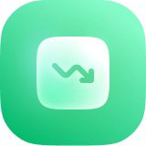
Снизить % уходов с сервиса
Сократить время поиска нужной пары до 5 секунд
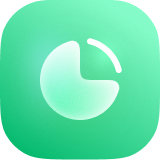
Увеличить время удержания внимания до 2+ мин
Стимулировать переход от поиска к действию (расчёт позиции)
Аудит существующего раздела
Анализ текущего экрана выявил:
Критично
- Нет сравнения цены одного инструмента на разных биржах
- Отсутствие поиска по инструментам
- Большой размер карточек, внутри — хаос из информации
Важно
- Слабая навигация
- Нет возможности выбрать несколько бирж для сравнения
- Неинформативная статистика
- Цель
- Снижение оттока пользователей и рост вовлечённости за счёт табличного вида и оптимизации поиска и сравнения торговых пар.
- Продуктовая задача
- Упростить для пользователей вид, сравнение и поиск нужной торговой пары до 5 секунд, чтобы снизить количество уходов с сервиса и увеличить вовлечённость за счёт более быстрых и частых действий.
- Добавить
- Мультиселект с биржами, поле поиска, функционал избранного.
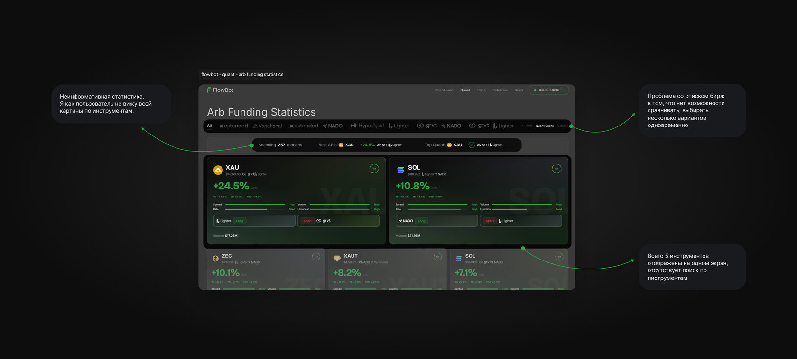
Инсайты, данные и конкуренты
- Изучаем полученные инсайты от группы пользователей.
- Формулируем весь фидбэк в гипотезы, анализируем конкурентов.
- Используем Jobs To Be Done как фокус на прогрессе, которого хочет достичь пользователь.
Анализ количественных данных
Запросил у продукта последние данные по аналитике. Целевое действие = нашёл нужную пару + остался в сервисе (не ушёл).
пользователей совершают целевое действие за сессию и переходят в карточку пары для детального анализа
покидают сервис, не совершив целевого действия
Анализ конкурентов
Изучил 3 похожих платформы. Общая картина следующая:
- Все используют табличный вид для отображения данных
- Есть поиск по инструментам
- Реализовано добавление и изменение бирж
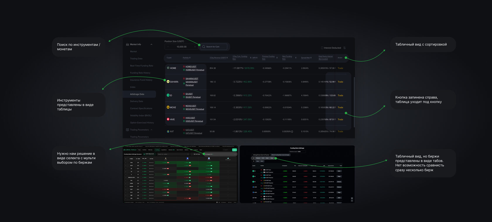
Оценка проблемы
Большинство пользователей не доходят до целевого действия из-за плохой навигации.
Мы хотим
Сократить время поиска торговой пары и повысить долю сессий с найденной парой.
Чтобы
Пользователи перестали «теряться» в интерфейсе и находили нужную пару сразу, как только возникла потребность в анализе ставки или принятии решения.
Бизнес-эффект
Рост вовлечённости и удержания → снижение оттока → рост конверсии в расчёт позиций и комиссионного дохода.
Рынок уже привык к определённому паттерну. Задача — не изобретать велосипед, а сделать этот паттерн удобнее и быстрее для пользователя
Фокус на прогрессе пользователя
я открываю сервис
сразу видеть список всех инструментов с возможностью поиска
быстро анализировать и находить выгодные предложения и не пропустить выгодную цену
Идеи и варианты решений
Генерирую идеи и проектирую возможные пути решения задачи. Проектирую несколько вариантов расположения элементов.
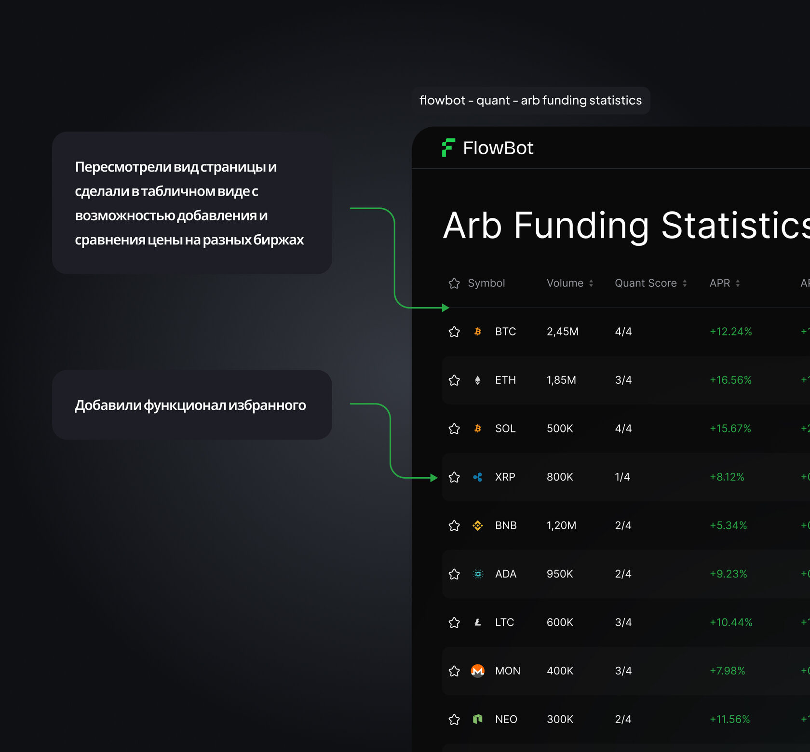
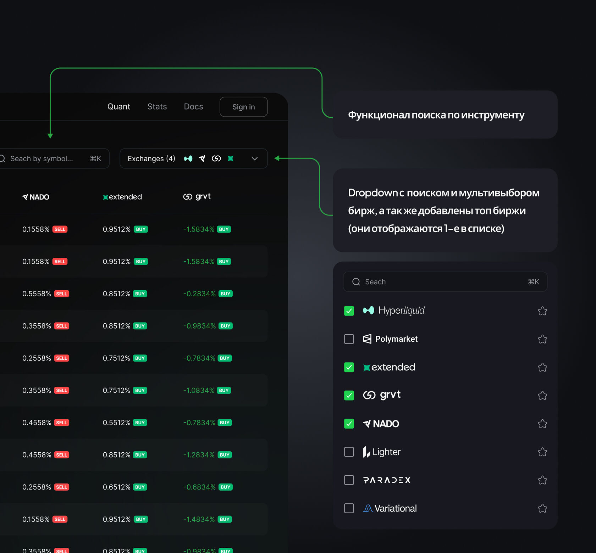
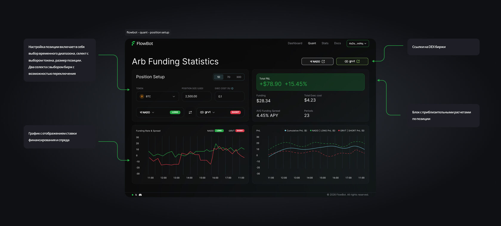
4 варианта → 2 финалиста
В результате ревью макетов мы рассмотрели 4 варианта с продактом и выбрали 2 наиболее понятных и подходящих с точки зрения расположения элементов на экране.
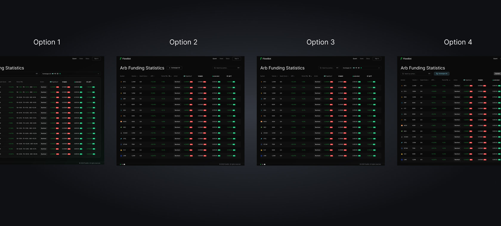
По результатам ревью решили: поиск и селект с выбором бирж — в один ряд справа от заголовка из варианта 1. Таблицу с добавлением в избранное и дополнительным выделением строки цветом — из варианта 2.
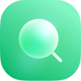
Поиск
Эффект: снижение оттока пользователей и сокращение времени за счёт удобного поиска нужного инструмента.Селект выбора бирж
Эффект: быстрое добавление одной или нескольких бирж для сравнения данных и быстрого принятия решений.Избранное
Эффект: собственный список инструментов — меньше времени на поиск, быстрее торговые решения.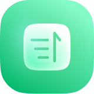
Сортировки по колонкам
Эффект: быстрое взаимодействие с таблицей и сокращение времени на поиск лучших решений.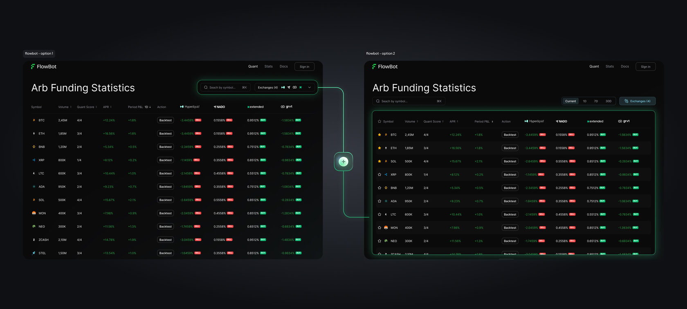
Проверка на пользователях
Предоставляем новую версию для теста и получения фидбэка.
В рамках UX-тестирования я оценивал, насколько интуитивно пользователи находят инструменты для арбитража фандинга в обновлённом интерфейсе и переходят на экран настройки и расчёта позиции.
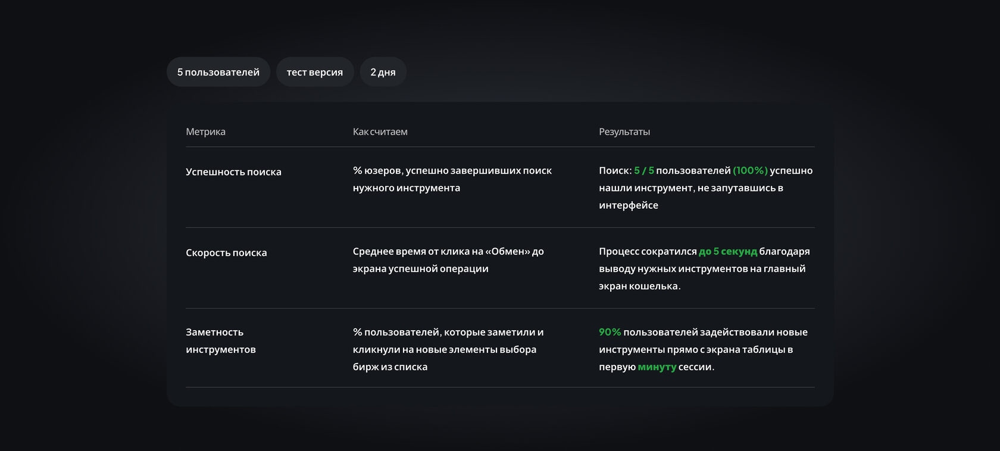
Новая структура работает: пользователи быстро находили нужные инструменты и выбор бирж. Изменения упрощают поиск, сокращают время на подготовку к сделке и повышают вовлечённость.
Все состояния интерфейса
Доработка экрана таблицы с разными состояниями: эмпти-стейты, отображение от 1 до 4 бирж одновременно, выпадающий список с биржами, ховер-эффекты для всех элементов. Добавлен горизонтальный скролл таблицы с закреплением инструмента и его параметров. Экран расчёта позиции с возможностью изменения параметров.
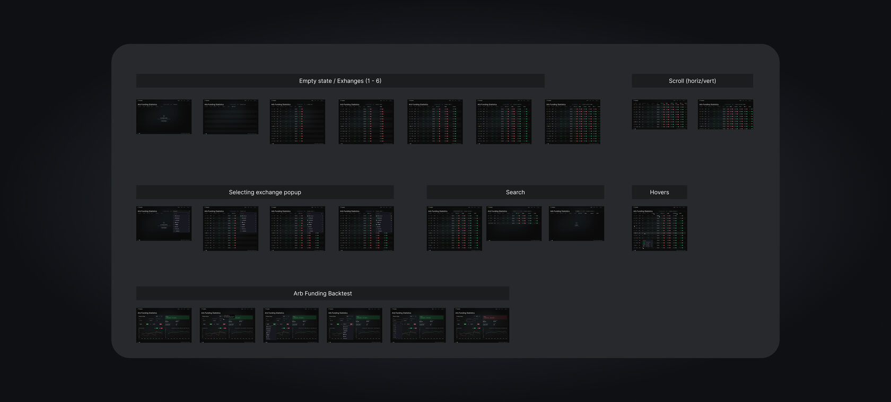
Интерфейс в движении
Демонстрация интерфейса с прохождением по новому сценарию и с новым дизайном.
Видео не загрузилось? Открыть файл